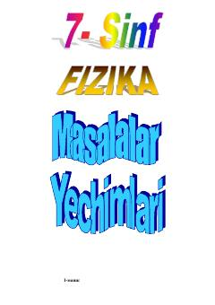

7F7-sinf fizika fanidan masalalar va ularning batafsil yechimlari to'plami.
Mazkur qo'llanma 7-sinf fizika fanidan masalalar yechish ko'nikmalarini shakllantirishga mo'ljallangan bo'lib, mexanika bo'limiga oid turli masalalarning batafsil yechimlarini o'z ichiga oladi. Unda tezlik, tezlanish, yo'l va vaqtni hisoblashga doir misollar bosqichma-bosqich tushuntirilgan.